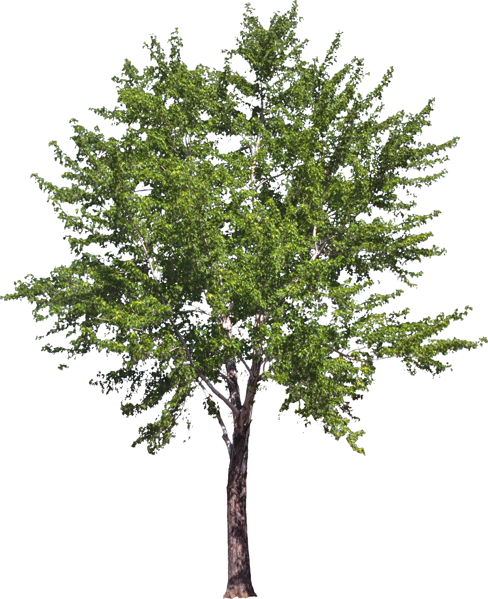

Arbre le plus grand de Paris !
L'arbre le plus grand de Paris est en effet un platane se trouvant dans le bois de Boulogne. Il a atteint une taille de 45 mètres, et a été planté le 1er Janvier 1872. Cette arbre a donc 150 ans.

Arbre avec la plus grande circonférence de Paris !
L'arbre possédant la plus grande circonférence de Paris est, tout comme l'arbre le plus grand, un platane. Il a une circonférence de 695 cm !